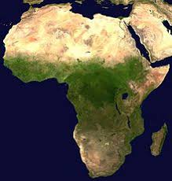

А́фрика — второй по площади материк после Евразии, омывается Средиземным морем с севера, Красным — с северо-востока,
Атлантическим океаном с запада и Индийским океаном с востока и юга. Африкой называется также часть света, состоящая из материка Африка
и прилегающих островов. Площадь Африки без островов составляет 29,2 млн км², с островами — около 30,3 млн км²[3], покрывая, таким образом,
6 % общей площади поверхности Земли и 20,4 % поверхности суши. На территории Африки расположено 55 государств.
Рельеф.
Большей частью — равнинный, на северо-западе расположены Атласские горы, в Сахаре — нагорья Ахаггар и Тибести.
На востоке — Эфиопское нагорье, к югу от него Восточно-африканское плоскогорье, где находится вулкан Килиманджаро (5895 м) —
высочайшая точка материка. На юге расположены Капские и Драконовы горы. Самая низкая точка (157 метров ниже уровня Мирового океана)
расположена в Джибути, это солёное озеро Ассаль. Самой глубокой пещерой является Ану Иффлис, расположенная на севере Алжира в горах Тель-Атлас.
Африка — это самый жаркий материк планеты. Причина этого — в географическом расположении материка: вся территория Африки находится в жарких
климатических поясах (включая субтропические) и материк пересекается линией экватора. Именно в Африке находится самое жаркое место на Земле — Даллол.
Центральная Африка и прибрежные районы Гвинейского залива относятся к экваториальному поясу, там в течение всего года выпадают обильные осадки
и нет смены времён года. К северу и к югу от экваториального пояса расположены субэкваториальные пояса. Здесь летом господствуют влажные экваториальные
массы воздуха (сезон дождей), а зимой — сухой воздух тропических пассатов (сухой сезон). Севернее и южнее субэкваториальных поясов расположены северный
и южный тропические пояса. Для них характерны высокие температуры при малом количестве осадков, что ведёт к образованию пустынь.
На севере расположена крупнейшая на Земле пустыня Сахара, на юге — пустыня Калахари, на юго-западе пустыня Намиб. Северная и южная оконечности
материка входят в соответствующие субтропические пояса.